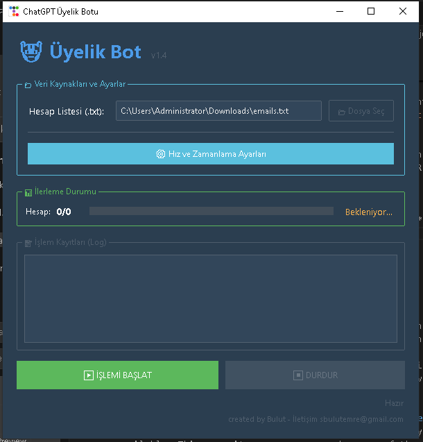

RPA · PYTHON · MASAÜSTÜ UYGULAMA
Bir freelance müşteri için geliştirilen, tekrarlayan kayıt ve doğrulama süreçlerini otomatikleştiren masaüstü RPA yazılımı. Asıl mühendislik zorluğu otomasyonun kendisi değil, onu kurulum gerektirmeden ve donmayan bir arayüzle paketlemekti.
modüler bir python uygulaması
Otomasyon motoru Playwright'ın asenkron API'si üzerine kurulu. Arayüz ttkbootstrap ile yazıldı — modern görünümlü, responsive ve thread-safe bir Tkinter katmanı. Tüm işlem kayıtları CSV'ye loglanıyor, uygulama PyInstaller ile tek dosya haline getirilip müşteriye Python kurulumu gerektirmeden teslim ediliyor.
asıl iş, iki farklı eşzamanlılık modelini aynı uygulamada barındırmaktı
Tkinter kendi olay döngüsünü çalıştırır; asyncio da kendi event loop'unu ister. İkisi aynı thread'de çalışamaz — otomasyon başladığı anda arayüz kilitleniyordu.
asyncio event loop kuruldu ve Playwright işlemleri oradan yürütüldü.Sayfa yüklenme süreleri ağ koşullarına göre değişiyordu. Sabit sleep değerleri ya gereksiz yavaşlatıyor ya da eleman henüz gelmeden işlem yapıp hata veriyordu.
Yazılım teknik olmayan bir kullanıcıya teslim edilecekti. Bir adım hata verdiğinde kullanıcının müdahale etmesini beklemek gerçekçi değildi.
teknik olmayan kullanıcı için tasarlandı
Kullanıcı zamanlama ayarlarını, girdi dosyalarını ve çalışma parametrelerini arayüzden yönetiyor; ilerlemeyi gerçek zamanlı izliyor. Terminal ya da konfigürasyon dosyası bilgisi gerekmiyor.

Kurulum gerektirmeyen, tek dosya çalışan otomasyon araçları geliştiriyorum.